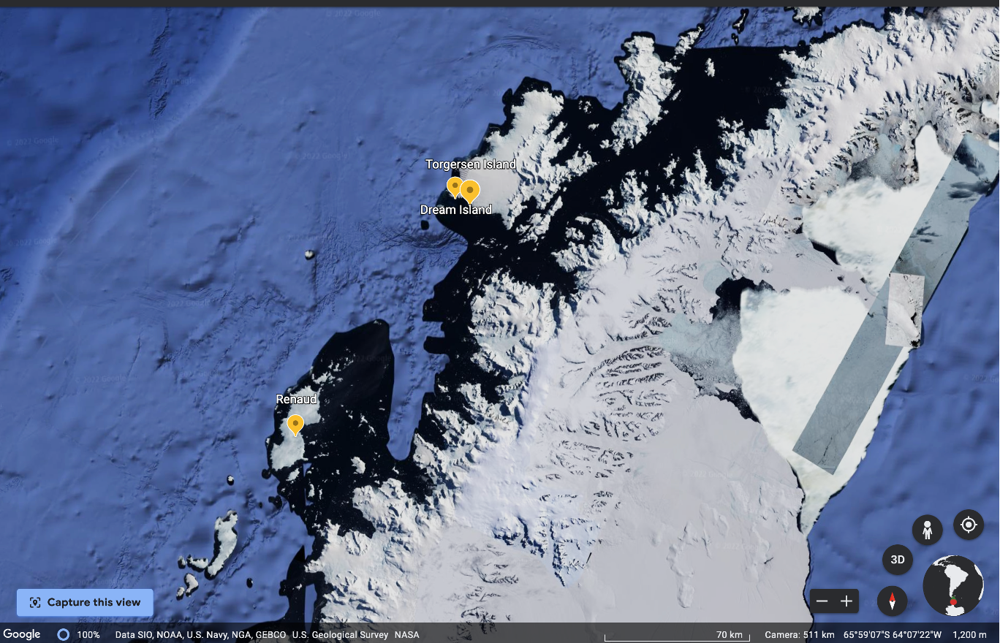

v. Visualization essentials¶
# import libraries
import pandas as pd
import seaborn as sns
import matplotlib.pyplot as plt
# make sure plots show in the notebook
%matplotlib inline
After importing data, you should examine it closely.
Look at the raw data ans perform rough checks of your assumptions
Compute summary statistics
Produce visualizations to illustrate obvious - or not so obvious - trends in the data
Plotting with seaborn¶
First, a note about matplotlib¶
There are many different ways to visualize data in Python but they virtually all rely on matplotlib. You should take some time to read through the tutorial: https://matplotlib.org/stable/tutorials/introductory/pyplot.html.
Because many other libraries depend on matplotlib under the hood, you should familiarize yourself with the basics. For example:
import matplotlib.pyplot as plt
x = [1,2,3,4,5]
y = [2,4,6,8,20]
plt.scatter(x, y)
plt.title('title')
plt.ylabel('some numbers')
plt.xlabel('x-axis label')
plt.show()
Visualization best practices¶
Consult Wilke’s Fundamentals of Data Visualization https://clauswilke.com/dataviz/ for discussions of theory and best practices.
The goal of data visualization is to accurately communicate something about the data. This could be an amount, a distribution, relationship, predictions, or the results of sorted data.
Utilize characteristics of different data types to manipulate the aesthetics of plot axes and coordinate systems, color scales and gradients, and formatting and arrangements to impress your audience!


Summary statistics - pandas review¶
# load the Gapminder dataset
gap = pd.read_csv("data/gapminder-FiveYearData.csv")
---------------------------------------------------------------------------
FileNotFoundError Traceback (most recent call last)
/var/folders/9g/fhnd1v790cj5ccxlv4rcvsy40000gq/T/ipykernel_31293/3552124015.py in <module>
1 # load the Gapminder dataset
----> 2 gap = pd.read_csv("data/gapminder-FiveYearData.csv")
~/opt/anaconda3/lib/python3.8/site-packages/pandas/util/_decorators.py in wrapper(*args, **kwargs)
309 stacklevel=stacklevel,
310 )
--> 311 return func(*args, **kwargs)
312
313 return wrapper
~/opt/anaconda3/lib/python3.8/site-packages/pandas/io/parsers/readers.py in read_csv(filepath_or_buffer, sep, delimiter, header, names, index_col, usecols, squeeze, prefix, mangle_dupe_cols, dtype, engine, converters, true_values, false_values, skipinitialspace, skiprows, skipfooter, nrows, na_values, keep_default_na, na_filter, verbose, skip_blank_lines, parse_dates, infer_datetime_format, keep_date_col, date_parser, dayfirst, cache_dates, iterator, chunksize, compression, thousands, decimal, lineterminator, quotechar, quoting, doublequote, escapechar, comment, encoding, encoding_errors, dialect, error_bad_lines, warn_bad_lines, on_bad_lines, delim_whitespace, low_memory, memory_map, float_precision, storage_options)
678 kwds.update(kwds_defaults)
679
--> 680 return _read(filepath_or_buffer, kwds)
681
682
~/opt/anaconda3/lib/python3.8/site-packages/pandas/io/parsers/readers.py in _read(filepath_or_buffer, kwds)
573
574 # Create the parser.
--> 575 parser = TextFileReader(filepath_or_buffer, **kwds)
576
577 if chunksize or iterator:
~/opt/anaconda3/lib/python3.8/site-packages/pandas/io/parsers/readers.py in __init__(self, f, engine, **kwds)
931
932 self.handles: IOHandles | None = None
--> 933 self._engine = self._make_engine(f, self.engine)
934
935 def close(self):
~/opt/anaconda3/lib/python3.8/site-packages/pandas/io/parsers/readers.py in _make_engine(self, f, engine)
1215 # "Union[str, PathLike[str], ReadCsvBuffer[bytes], ReadCsvBuffer[str]]"
1216 # , "str", "bool", "Any", "Any", "Any", "Any", "Any"
-> 1217 self.handles = get_handle( # type: ignore[call-overload]
1218 f,
1219 mode,
~/opt/anaconda3/lib/python3.8/site-packages/pandas/io/common.py in get_handle(path_or_buf, mode, encoding, compression, memory_map, is_text, errors, storage_options)
787 if ioargs.encoding and "b" not in ioargs.mode:
788 # Encoding
--> 789 handle = open(
790 handle,
791 ioargs.mode,
FileNotFoundError: [Errno 2] No such file or directory: 'data/gapminder-FiveYearData.csv'
# view column names of Gapminder data
gap.columns
Index(['country', 'year', 'pop', 'continent', 'lifeExp', 'gdpPercap'], dtype='object')
All columns¶
# mean of all variables except country
gap.groupby('continent').mean()
| year | pop | lifeExp | gdpPercap | |
|---|---|---|---|---|
| continent | ||||
| Africa | 1979.5 | 9.916003e+06 | 48.865330 | 2193.754578 |
| Americas | 1979.5 | 2.450479e+07 | 64.658737 | 7136.110356 |
| Asia | 1979.5 | 7.703872e+07 | 60.064903 | 7902.150428 |
| Europe | 1979.5 | 1.716976e+07 | 71.903686 | 14469.475533 |
| Oceania | 1979.5 | 8.874672e+06 | 74.326208 | 18621.609223 |
One column¶
# Mean life expectancy for each continent
gap.groupby('continent')["lifeExp"].mean()
continent
Africa 48.865330
Americas 64.658737
Asia 60.064903
Europe 71.903686
Oceania 74.326208
Name: lifeExp, dtype: float64
Multiple columns¶
# Mean lifeExp and gdpPercap for each continent
le_table = gap.groupby('continent')[["lifeExp", "gdpPercap"]].mean()
le_table
| lifeExp | gdpPercap | |
|---|---|---|
| continent | ||
| Africa | 48.865330 | 2193.754578 |
| Americas | 64.658737 | 7136.110356 |
| Asia | 60.064903 | 7902.150428 |
| Europe | 71.903686 | 14469.475533 |
| Oceania | 74.326208 | 18621.609223 |
Basic plots¶
Histogram: visualize distribution of one continuous (i.e., integer or float) variable.
Boxplot: visualize the distribution of one continuous variable.
Scatterplot: visualize the relationship between two continuous variables.
Histogram¶
Use a histogram to plot the distribution of one continuous (i.e., integer or float) variable.
# all data
sns.histplot(data = gap,
x = 'lifeExp');
# by continent
sns.histplot(data = gap,
x = 'lifeExp',
hue = 'continent');

Boxplot¶
Boxplots can be used to visualize one distribution as well, and illustrate different aspects of the table of summary statistics.
# summary statistics
gap.describe()
| year | pop | lifeExp | gdpPercap | |
|---|---|---|---|---|
| count | 1704.00000 | 1.704000e+03 | 1704.000000 | 1704.000000 |
| mean | 1979.50000 | 2.960121e+07 | 59.474439 | 7215.327081 |
| std | 17.26533 | 1.061579e+08 | 12.917107 | 9857.454543 |
| min | 1952.00000 | 6.001100e+04 | 23.599000 | 241.165876 |
| 25% | 1965.75000 | 2.793664e+06 | 48.198000 | 1202.060309 |
| 50% | 1979.50000 | 7.023596e+06 | 60.712500 | 3531.846988 |
| 75% | 1993.25000 | 1.958522e+07 | 70.845500 | 9325.462346 |
| max | 2007.00000 | 1.318683e+09 | 82.603000 | 113523.132900 |
# all data
sns.boxplot(data = gap,
y = 'lifeExp',
color = 'gray')
<AxesSubplot:ylabel='lifeExp'>
gap.groupby('continent').count()
| country | year | pop | lifeExp | gdpPercap | |
|---|---|---|---|---|---|
| continent | |||||
| Africa | 624 | 624 | 624 | 624 | 624 |
| Americas | 300 | 300 | 300 | 300 | 300 |
| Asia | 396 | 396 | 396 | 396 | 396 |
| Europe | 360 | 360 | 360 | 360 | 360 |
| Oceania | 24 | 24 | 24 | 24 | 24 |
# by continent
sns.boxplot(data = gap,
x = 'continent',
y = 'lifeExp').set_title('Boxplots');

# custom colors
sns.boxplot(data = gap,
x = 'continent',
y = 'lifeExp',
palette = ['gray', '#8C1515', '#D2C295', '#00505C', 'white']).set_title('Boxplots');
Scatterplot¶
Scatterplots are useful to illustrate the relationship between two continuous variables. Below are several options for you to try.
### change figure size
sns.set(rc = {'figure.figsize':(12,8)})
### change background
sns.set_style("ticks")
# commented code
ex1 = sns.scatterplot(
# dataset
data = gap,
# x-axis variable to plot
x = 'lifeExp',
# y-axis variable to plot
y = 'gdpPercap',
# color points by categorical variable
hue = 'continent',
# point transparency
alpha = 1)
### log scale y-axis
ex1.set(yscale="log")
### set axis labels
ex1.set_xlabel("Life expectancy (Years)", fontsize = 20)
ex1.set_ylabel("GDP per cap (US$)", fontsize = 20);
### unhashtag to save
### NOTE: this might only work on local Python installation and not JupyterLab - try it!
# plt.savefig('img/scatter_gap.pdf')

Quiz - Penguins dataset¶
Learn more about the biological and spatial characteristics of penguins!

Use seaborn to make one of each of the plots in the image below. Check out the seaborn tutorial for more examples and formatting options: https://seaborn.pydata.org/tutorial/function_overview.html
What might you conclude about the species of penguins from this dataset?

Map of Antarctica¶
Below is a map of Antarctica past the southernmost tip of the South American continent.
The distance from the Biscoe Islands (Renaud) to the Torgersen and Dream Islands is about 140 km.

# get help with the question mark
# sns.scatterplot?
# load penguins data
penguins = pd.read_csv('data/penguins.csv')
# hint:
penguins.groupby('island').count()
| species | bill_length_mm | bill_depth_mm | flipper_length_mm | body_mass_g | sex | |
|---|---|---|---|---|---|---|
| island | ||||||
| Biscoe | 168 | 167 | 167 | 167 | 167 | 163 |
| Dream | 124 | 124 | 124 | 124 | 124 | 123 |
| Torgersen | 52 | 51 | 51 | 51 | 51 | 47 |
# hint:
penguins.groupby('island').mean()
| bill_length_mm | bill_depth_mm | flipper_length_mm | body_mass_g | |
|---|---|---|---|---|
| island | ||||
| Biscoe | 45.257485 | 15.874850 | 209.706587 | 4716.017964 |
| Dream | 44.167742 | 18.344355 | 193.072581 | 3712.903226 |
| Torgersen | 38.950980 | 18.429412 | 191.196078 | 3706.372549 |
# 1. relational - scatterplot
# your answer here:
# 2. relational - lineplot
# your answer here:
# 3. distributions - histplot
# your answer here:
# 4. distributions - kdeplot
# your answer here:
# 5. distributions - ecdfplot
# your answer here:
# 6. distributions - rugplot
# your answer here:
# 7. categorical - stripplot
# your answer here:
# 8. categorical - swarmplot
# your answer here:
# 9. categorical - boxplot
# your answer here:
# 10. categorical - violinplot
# your answer here:
# 11. categorical - pointplot
# your answer here:
# 12. categorical - barplot
# your answer here:
Quiz - Gapminder dataset¶
Make the twelve plots using the Gapminder dataset.
What can you conclude about income and life expectancy?
Visit https://www.gapminder.org/ to learn more!
Things you are probably wrong about!¶

See the survey and correct response rate of the Sustainable Development Misconception Study 2020
# 1. relational - scatterplot
# your answer here:
# 2. relational - lineplot
# your answer here:
# 3. distributions - histplot
# your answer here:
# 4. distributions - kdeplot
# your answer here:
# 5. distributions - ecdfplot
# your answer here:
# 6. distributions - rugplot
# your answer here:
# 7. categorical - stripplot
# your answer here:
# 8. categorical - swarmplot
# your answer here:
# 9. categorical - boxplot
# your answer here:
# 10. categorical - violinplot
# your answer here:
# 11. categorical - pointplot
# your answer here:
# 12. categorical - barplot
# your answer here: